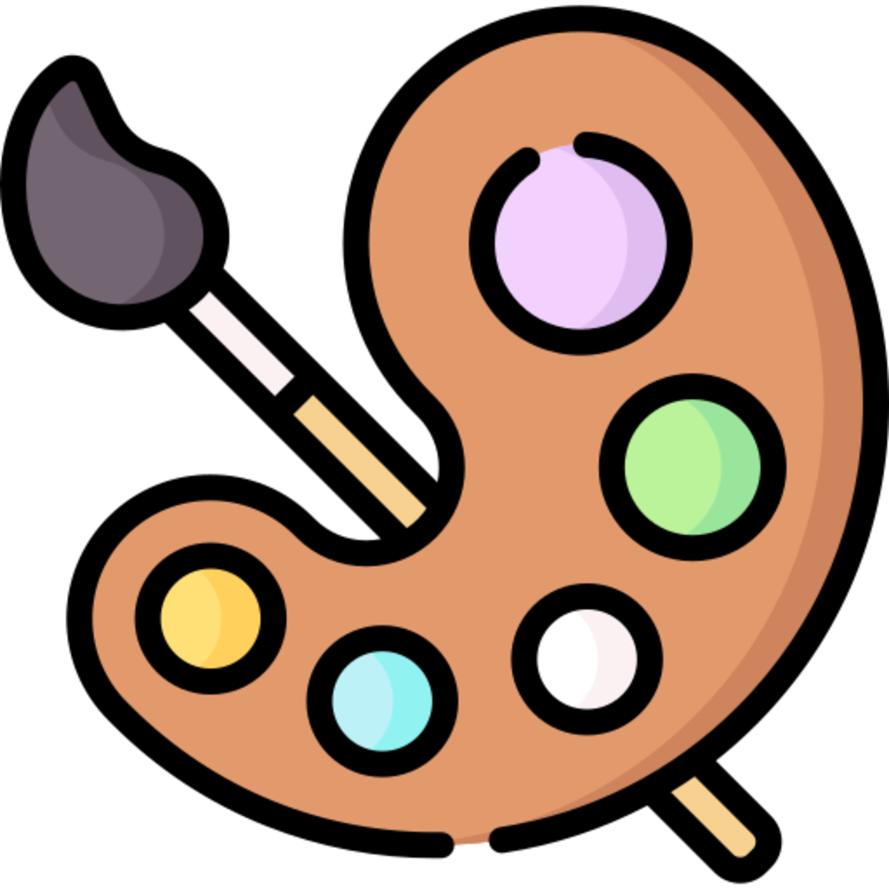

I love watching TV shows and movies! My favorite anime is One Piece, but my favorite popular show is Scandal. I really enjoy watching TV in my free time, when I'm not doing career-oriented activities.
Crocheting is one of my relaxing hobbies! As of 2025, I don't do it very much. It used to be the hobby I'd do when I had to think through a problem, but now I just sit and think on it without needing to get my hands busy.
Jujitsu keeps me active and focused! I love learning new techniques and challenging myself physically. It's an exhilarating way to get my body in shape and helps me learn new defensive strategies for the real world, in case I'm ever in need to protect myself. Additionally, I like Muay Thai, which is similar to boxing, but not quite the same.
I'm interested in finance and economics! I want to do day trading when I'm older and am Interested in price action in the US and global economy. It's important to monitor. I want to invest when I'm 18.

I enjoy creating art and being creative!. I've used watercolor, acrylics, and charcoal pieces. I enjoy letting myself find creativity in these hobbies and channeling my imagination. My favorite paintings are Monet's Water Lilies, serene imagery I'd want to be imersed in.

Reading is one of my favorite hobbies! I usually go for self-help or young adult fiction. As I've gotten older, I began transitioning to novels that would benefit me. I love the Percy Jackson series, written by Rick Riordan. He's written several other books, including the Mangus Chase series. I really enjoyed the Norse mythology of that one. The occasionally tragic nonfiction is a must read however.
Writing lets me express my creativity through words! It's a wonderful outlet for self-expression. I write poems on PoetrySoup.com and write in my journal about my day. It's an important way to channel my feelings.
Drawing is another artistic passion of mine! I've done it almost every day in school and would doodle on the margins of my books. I have sketch books upon sketch books of drawings that I have kept since I was 7!